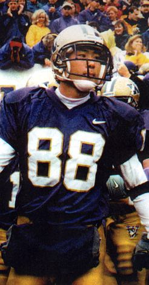
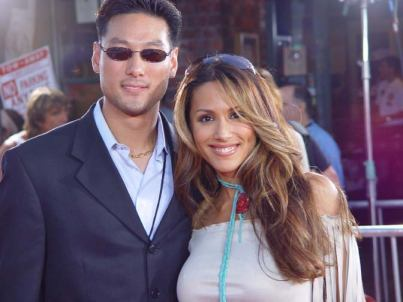

|
Kyu Lee |
|
 Ktown213: Hey Kyu, give K-Town a 30 second intro!Kyu Lee: One, two, three...Kyu Lee, that's me, 29...30. OK, OK. I moved to Los Angeles from Mercer Island, WA June of 2001 and it's been a fun and busy rollercoaster, with more to look forward to. KT213: What was is like playing football for Coach Neuheisel and the Washington Huskies? KL: Regardless of all the bad press he's gotten and the mistakes he's made, Coach Neu is a great coach with priceless knowledge and I owe him for the ultimate college experience. It was definitely one of the highlights as a school boy. I was this kid that had 3 high school games of football experience and he invited me onto a Division 1 football program. Let's not forget to mention Coach Randy Hart and Coach Karl Dorrell (current UCLA head coach). Coach Hart was always encouraging and supportive and Coach Dorrell who I spent most my time with turned me into a trained monkey and instilled this work ethic in me that keeps me so focused and determined on everything I do till this day. My teammates were my second family during college. Some of them are my closest friends for life. By the way, vote for Matt Rogers, on American Idol. He was one of our teammates. That's our dawg! KT213: Did you ever have aspirations of making it to the NFL? KL: No. Playing football was actually a dare from some of my teammates, Al Burleson, Darrell Daniels, Oye Waddell, Ken Walker, Marques Tuiasosopo just to name a few. We were sitting in the campus cafeteria between classes and we all just started talking smack about each other. I got myself into the mix and said some nice things myself...and then they dared me to tryout. Was I gonna back down? Please.... Coaches invited me for a meeting (which I was actually kind of joking, so was totally surprised) from the referral of my eagerly awaiting teammates and I went through some winter tests and spring training evaluations, next thing I knew I was getting issued a helmet, jersey, and a laundry bag. I walked into locker room and everyone got dead quiet for a second... then all laughed in disbelief welcoming me to the family. I originally went to UW to play baseball (obviously because, yes, my Mom wouldn't let me leave home unless it was Stanford, but I have no regrets. Mom is always right. Love you, Mom. (*wink, wink*), without getting specific, it just didn't work out for me so I just hit the books for a couple years before football opened up its doors to me. Major League Baseball was more of a dream for me than the NFL. But many of my ex-teammates and friends are playing in the pros so I live the life through them, for now.... KT213: I guess we can say you're an ex-football player gone Hollywood. Was that a hard transition to make? KL: Nothing hard about it. Sports and the movies are both entertainment. I knew I didn't want to brush other people's teeth, lie professionally for clients, or code databases all day, so sports or the movies was an easy choice. Work ethic is both the same mentally, obviously not physically, but the only transition was exercising 40 hours a week to working at my desk and running around the movie studio 40 hours a week. It's all good. KT213: You now work for Sony Pictures under one of the most powerful persons in Hollywood, what has that experience been like? KL: Yes, what an experience, I gotta admit, I've been blessed. From the #1 conference in college football, the PAC-10, to the #1 studio in the movie business, I can't complain. Maybe I would have been happy taking that job at Microsoft and living close to my family in Seattle, but when I realized what I got myself into here in Los Angeles, not bad at all. At Sony Pictures, I work in the Columbia TriStar Motion Picture Group. Marketing and Distribution is the name of the game in this building and it is an exciting experience digesting knowledge of how to run a big time studio. In short, it's a handful of things consisting of reading scripts, buying rights, casting actors, greenlighting movies, developing advertising campaigns, and marketing the material. After the completion of that process, it's choosing release dates, organizing world premieres and then finally releasing the movie. After that it's the DVD releases which is another process, which is another story. Working with various executives, directors, producers, and actors is a new experience everyday and are relationships I will cherish forever.
 KT213:
You've starred in Spin City, Dark Blue with Kurt Russell and
you've worked with Tom Cruise in the upcoming film, Collateral. What was it
like working with some of the big named stars?
|
|
©2004 Ktown213.com. All Rights Reserved. |